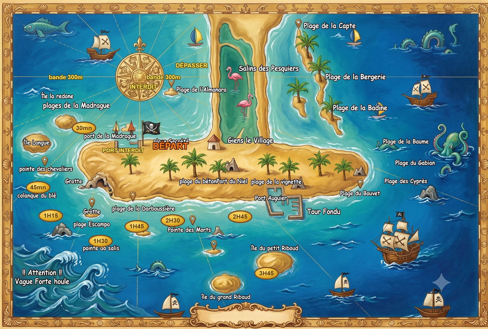
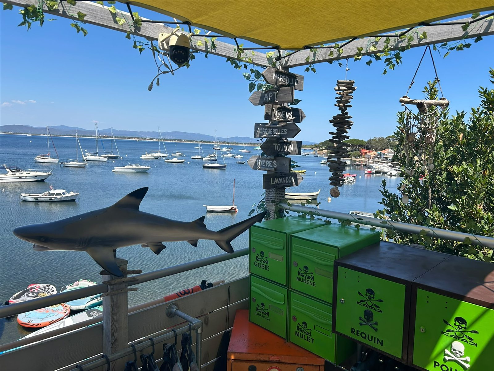
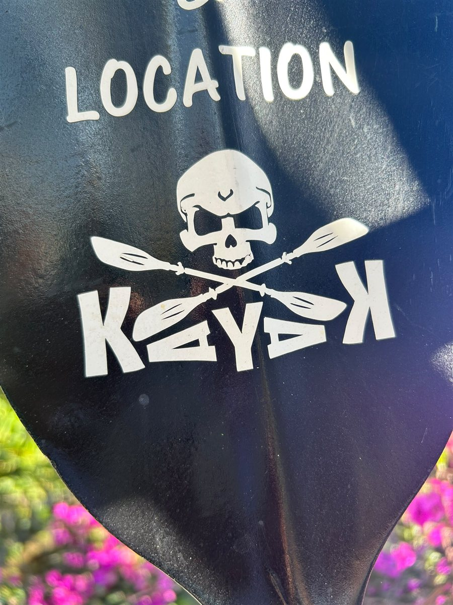
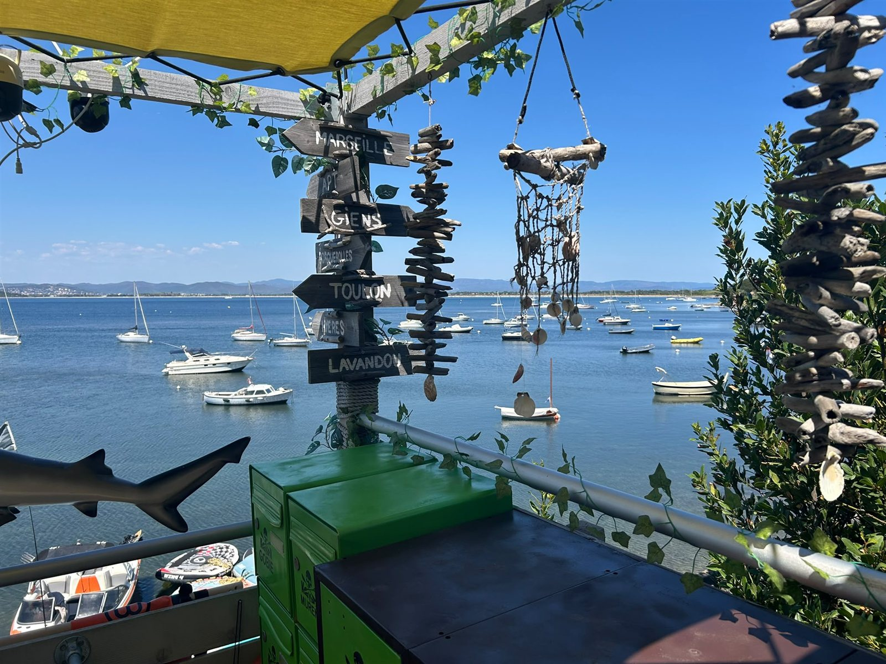
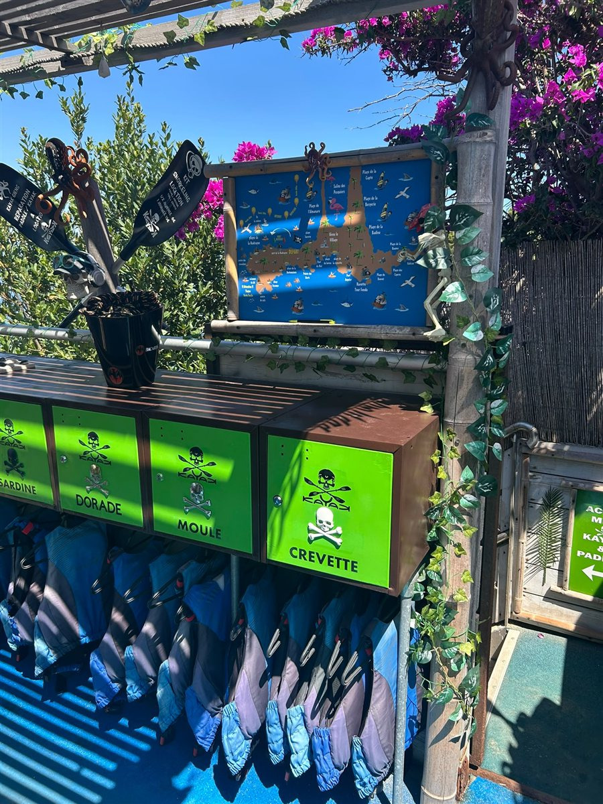
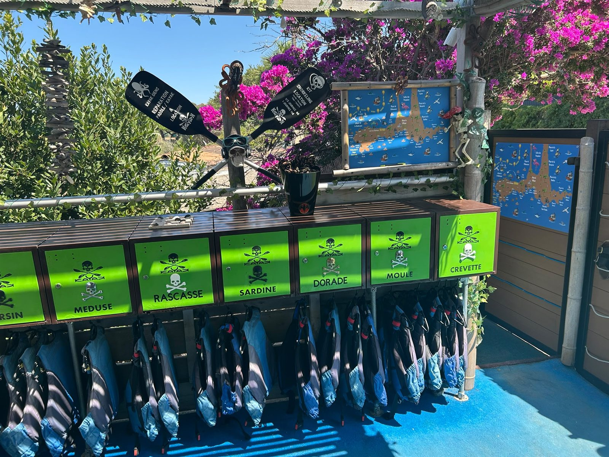
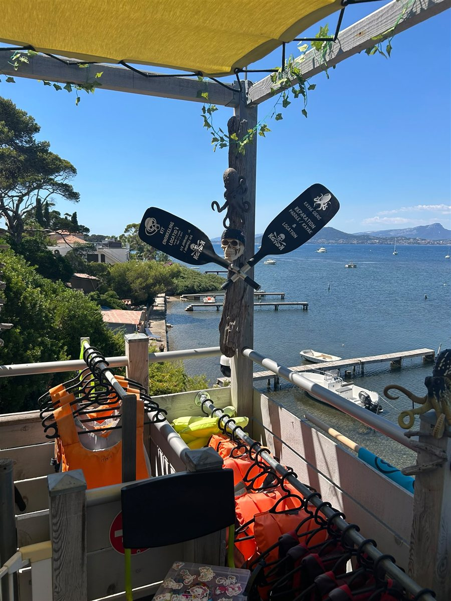

Kayak, paddle et paddle géant au départ de la Madrague. On vous ouvre la carte — les calanques, les grottes, l'île du Grand Ribaud, l'eau turquoise. Vous n'avez qu'à pagayer.
Chaque sortie est un cap. La voici dessinée : les spots, les grottes, les îles — et le temps de pagaie pour y aller, au départ de la Madrague.

Notre carte des balades, dessinée à la main. Chaque médaillon or donne le temps de pagaie jusqu'au spot, au départ de la Madrague.
Départ de la base de la Madrague, retour au même quai. On vous briefe, on vous équipe, on vous confie la carte.
Madrague → tombolo → Salins des Pesquiers → La Capte
Madrague → Port du Niel → Tour Fondue → retour
Madrague → pointe des Chevaliers → grottes → Escampo-Barriou
Madrague → Tour Fondue → les Ribaud → Porquerolles (Notre-Dame)
Parcours indicatifs, adaptés à la météo et à la mer du jour — le capitaine décide du cap au départ. Sécurité d'abord.
Matériel vérifié chaque matin, gilets fournis, briefing offert. Vous choisissez votre embarcation, on s'occupe du reste.
Léger, stable, pour explorer à son rythme.
À deux ou en famille, on pagaie ensemble.
Debout sur l'eau, l'horizon pour vous seul.
Jusqu'à 6 à bord — le fou rire garanti.
Pour filer sur l'eau sans forcer.
Groupes, équipes & enterrements de vie — sur mesure.
Tarifs indicatifs. Cours enfants 8-16 ans & randonnées accompagnées disponibles — le détail à la réservation.
« Accueil au top, on nous a tout expliqué et conseillé le bon coin selon le vent. Le matériel est nickel. »
— un équipage de passage
« Les grottes en kayak, l'eau transparente… un souvenir énorme. Le patron connaît chaque recoin. »
— une sortie en famille
« Simple, sympa, pas cher, et des paysages incroyables au départ de la Madrague. On reviendra. »
— un couple de vacanciers
Extraits représentatifs de la réputation de la maison. Sur le site final, vos vrais avis Google s'afficheront en direct, à jour.
Ce qui vous attend au bout de la pagaie : criques turquoise, calanques et le large de la presqu'île.






Vos propres photos de la base et des sorties — c'est votre maison, votre ambiance, elle est déjà là.
Votre site est déjà complet sans elle. Le jour où vous le voulez, on branche la réservation en direct — sans commission. En attendant, tout passe par le téléphone, comme aujourd'hui.
Base nautique de la Madrague
2683 route de la Madrague
83400 Giens · Hyères
06 82 66 03 39
Espèces & carte bancaire
Réservation conseillée en été
7j/7 · mai → septembre
9h – 18h
9h – 19h en juillet-août
Accueil FR / EN · gilets fournis
Animaux admis
Insta @kayakgiens · Facebook Kayak Giens